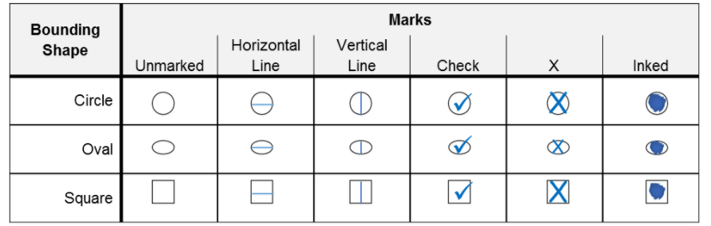
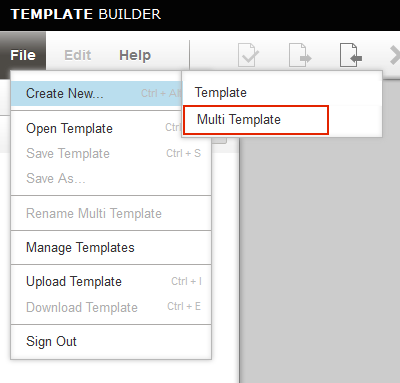
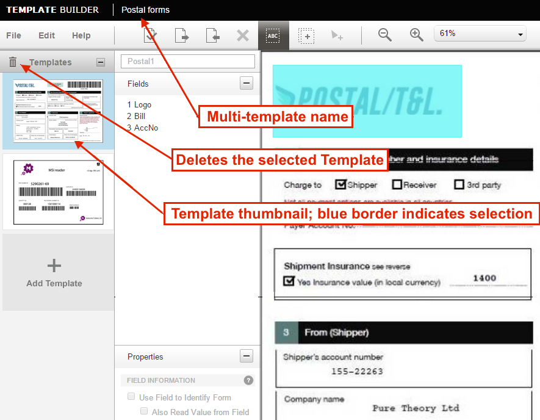
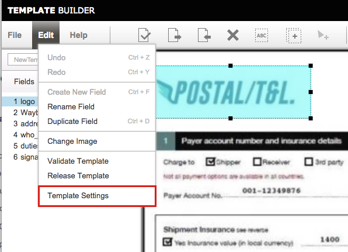
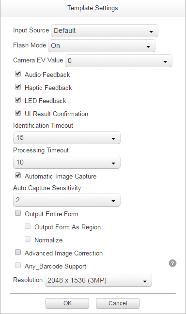

Overview
Template Builder is a web-based tool for defining the information captured by SimulScan and determining how it will be processed and made available to applications. Templates are the key to controlling SimulScan data-capture features and for processing the acquired data.
Most acquisition tasks involve capturing data from printed documents. These "target" documents often vary in size, shape and layout, and present a challenge for accurate data acquisition. Templates solve this problem by "teaching" SimulScan about the documents it will encounter, and defining how to scan and process data for each instance of that target document.

SimulScan Templates define "Form Regions of interest" on Documents to be scanned, "Field Regions of interest" within forms, and the types of data (barcode, text, etc.) to be extracted from each Field. Templates are used in all SimulScan modes. They control its ability to decode and parse data, and determine how acquired data can be consumed by an application.
 A typical barcode-only form, a common and effective SimulScan usage scenario.
A typical barcode-only form, a common and effective SimulScan usage scenario.
Templates work on the principle that the location and type of data in each region of a form (i.e. barcodes, alpha/numeric characters, signatures, etc.) will remain consistent and that only the data will change with each new instance of that form. Templates uniquely identify each region and data type of a particular form, allowing SimulScan to capture the data quickly and accurately, and permitting developers to map the acquired data to specific fields of their application.
For example, a company that receives regular shipments accompanied with a label like the one above could create a Multi-barcode Template to map the part number and supplier number from the barcodes in the upper row, and the quantity-received information from the lower row to the corresponding fields of an application.
In This Guide
This guide provides step-by-step instructions for using the GUI-based Template Builder tool to create Templates and deploy them to the devices. A familiarity with SimulScan concepts and terminology is required. If necessary, please read through the SimulScan Glossary and see the About SimulScan page before proceeding.
Before You Begin
Before attempting to create a Template, the following assets are required:
- Sample(s) of the Document(s) for which the Template(s) are being created
- Photos or image scans of those same documents
- An account on the Template Builder web site
Using Template Builder
Template Builder is free for Zebra partners and other registered users. Existing Zebra customers, partners and ISVs with access to Partner Central can use their existing credentials to gain access to Template Builder. Others must register using the instructions below. Credentials are generally sent within one or two business days.
Note: SimulScan can be used without a License only to scan barcodes through an app using DataWedge. A SimulScan License is required for access to OCR and OMR features and/or SimulScan APIs. For more information, please see the Licensing page.
Quick Steps
Below is a summary of the steps for creating a Template. The process is explained in detail in the section that follows.
- Log in to the Template Builder web site.
- Select the Template type to create.
- Upload an image of the Document to be scanned (.bmp, .jpg, .png or PDF; 5MB max.).
- Identify regions of the Document and the data types (barcodes, text, etc.) of each.
- Save and download the completed Template(s) to the development host (local PC).
- Copy Template(s) to the device that will be performing the scans.
- Activate the Template from within DataWedge (see below) or other scanning app.
Create an Account
1. Visit the Zebra SimulScan registration page, follow prompts to create a free account and enter all requested information. Once an account is created, Zebra administrators will send login information to the registered address. Zebra recommends planning ahead; this process could take several days.

2. Point a browser to simulscan.zebra.com and enter the login credentials. A screen appears similar to the image below:
Select Template Type
3. Select the desired Template type:
Structured Targets - for layouts that do not change from one instance to another. Select this option to:
- Scan barcodes, text and other data types from a single form
- Recognize and acquire characters (OCR)
- Recognize check marks (OMR)
- Detect the presence of and capture Signature(s) or other images
- Extract data from other key fields of interest
Unstructured Targets - for layouts that change from one instance to another or that will be used to acquire a single type of data. Select this option to:
- Capture only barcodes or only text
- Scan multiple barcodes/symbologies simultaneously OR
- Use OCR for a single line of alpha/numeric text
- Use OCR for a multiple lines of alpha/numeric text
3a. When selecting Structured Targets:
- An Open... dialog appears
- Select the image (.bmp, .jpg, .png or PDF) of the Document for which to create the Template
- Minimum image resolution is 640x480 pixels
- Maximum image resolution is 6000x6000 pixels
- Maximum image file size is 5MB
- For a PDF, select page number from the drop-down (if necessary)
3b. When selecting Unstructured Targets:
- Select "Multi-barcode" to capture barcodes or "OCR" for alpha/numeric text:
If selecting Multi-barcode, upload an image of the target Document to help to identify the form in the future.
If selecting OCR, Template Builder generates a static image automatically (as below). Configure OCR settings as required (see Step 7 for OCR details).

Save the template and skip to Step 7.
4. Save the Template to proceed.
Note: The Template name prefix "Default -" is reserved for system use. All other alpha/numeric combinations are accepted.
Warning: Do not attempt to modify the Template file by hand. Templates contain machine-generated XML stored in Base64-encoded files, and are not intended to be edited manually.
Identify Document Regions
If setting up an Unstructured Target, skip to Step 7.
After uploading an image of the target Document...
5. Confirm that the "AutoCrop" feature (enabled by default) has accurately identified the Document boundaries:
To adjust, click "Disable AutoCrop" and set Blue bounding box so that it's just outside the borders of the Document. Click "OK" when done. This serves as the base reference for identifying the form and processing its contents.
6. Drag a box from the upper-left corner to the lower-right corner of each Region of the Document that contains data to be acquired:

Field Region Guidelines:
- Barcode Regions must include only the bars and spaces; no surrounding characters should be included.
- OCR Regions should include surrounding white space equal to about two characters in width and height.
- OMR Regions should be kept tight to Bounding Boxes. A separate OCR Region can be created to capture the description, if needed.
Alternative ways to create Fields:
- Select Edit --> Create New Field, enter a name for the field and draw a box around the corresponding Region.
- Click the Add Field button (arrow, below), enter a name and draw a box around the corresponding Region.

Fields not specifically named will be assigned a generic name (as shown). These can be edited later as desired (see Modify a Template).
Provide (or confirm) the following required settings for each Field created:
- A name for the field, if desired
- Properties (length/width and X-Y coordinates)
- The required Processing mode (barcode, OCR, etc.)
- Processing-mode settings (decoder type, text-type, etc.)
- Select at least three "Anchor Elements" (explained below)
Save work often! Unsaved changes could be lost if the screen is dismissed or a session timeout is reached.
Select Anchor Elements
In addition its use of Document border dimensions, SimulScan uses Fields, company logos or other unique attributes of a Document to positively identify it and determine its orientation relative to the scanner (i.e. whether it's upside down). Optionally, Anchor Elements can contain data to be acquired, such as a barcode or image. Zebra recommends that at least two Anchor Elements be identified in accordance with the guidelines below.
Selection Guidelines:
- Select two or three Fields per document as Anchor Elements.
- Anchor Elements should be spread across the top, bottom and side(s) of the Document.
- Draw Fields loosely around graphics and tightly around barcodes; white space helps with identification of graphics but can cause errors for barcodes.
- For Structured Targets, static fields such as logos and preprinted content work well.
- Anchor Elements need not contain data to be acquired; the "Also Read Value from Field" parameter is optional.
- For Anchor barcodes:
- Draw Fields tightly around barcodes; leave no gaps outside the bounding box.
- Barcodes with a fixed location and size on all instances of a form work best.
- Select the “Barcode’s location is fixed” option in the Properties panel.
- Select symbologies with uniform numbers of digits to ensure consistent region size.
- Avoid symbologies with multiple level/stack/region barcode combinations (which may vary in region size).
- Zebra recommends using only the following barcodes for fixed-mode:
 Greyed symbologies are NOT recommended for selection as fixed barcodes.
Greyed symbologies are NOT recommended for selection as fixed barcodes.
In the Postal T&L Document below, the logo in the upper-left corner and the barcode in the upper-right would identify this form adequately for SimulScan to activate its template. Notice that the graphic is loosely bounded and the barcode tightly.
 Draw Fields tightly around barcodes and loosely around graphics for best results.
Draw Fields tightly around barcodes and loosely around graphics for best results.
When using a fixed barcode as an Anchor Element, be sure to select the “Barcode’s location is fixed” in the Properties panel, as below:
This attribute appears only in Templates for Structured Targets that use a non-postal symbology.
Configure OCR/OMR Settings
7. If not using OCR or OMR, skip to Step 8.
OCR Settings
To maximize the accuracy of character recognition in OCR regions, it's important to configure OCR parameters according to the expected input.
Character subsets - identifies the type of text that will be acquired:
- All caps alphabets - text will contain all uppercase letters
- All small alphabets - text will contain all lowercase letters
- Only Alphabets - text contain only alpha characters (upper- and lowercase)
- All digits - text contain only numbers
- Alphanumeric (default) - text contain a combination of letters and numbers
- Enter custom sub string set here - enter information about custom characters in the Custom Character Set text box
Regular Expressions - data will consistently be presented in a particular pattern (i.e. MM/DD/YYYY). Specify as a Regular Expression according to the table below:

Zebra recommends using this option only if the format defined can be guaranteed for the region.
SimulScan references the Perl Compatible Regular Expressions (PCRE) library for regular-expression pattern matching. Setting the character subset is easy but coarse; setting the regular expression is complex but precise. Specifying both the subset and the regex greatly narrows the range of possible candidates. Learn more by reading the Perl RegEx Man Pages.
Word Check - enables a spell-check in the selected language. Use on regions known to contain only words.
Language - English is the default. Switching to European will recognize characters typically found in European languages such as the digraph, circumflex and umlaut.
OMR Settings
The data type for optical mark recognition (OMR) is binary, resulting in the acquisition of a yes/no condition (i.e. "mark is present" or "mark is not present"). A third "undecided" state results when SimulScan is unable to recognize a mark. Use OCR to acquire the label that describes the mark, if desired.
Configure the Bounding Shape to ensure the most accurate result:
Bounding Box Shape - the shape of the object on the printed form that contains the mark to be acquired.
- Circle - mark is inside of a circular boundary
- Oval - mark is inside of an oval-shaped boundary
- Square - mark is inside of a square boundary

Acceptable marks for optical mark recognition; OMR also is used to detect signature presence.
Test and Validate Templates
Zebra recommends testing all Templates before deployment to devices to ensure proper operation. This can be done using the SimulScan Demo App. Template Builder also provides a Validation feature, which verifies template Fields and returns useful information about Field properties and settings. Both are explained below.
To test a Template using the Demo App:
After pushing the Template to a device...
8. Open the SimulScan Demo App, tap on the "Hamburger" menu, and select Menu -> Setup Custom Demo options, and navigate to the Template to be tested.
Verify that the Template works as expected.
To Validate Template:
9. Open the Template to be validated and select Edit...Validate Template.

A Validation Summary is displayed with one of more of the following messages:
Form Decoded:
- The Template successfully identified the target Document.
- At least two fields have been designated as Anchor Elements.
- Barcode Field(s) designated as “Use field to identify the form" use a supported symbology and its length is within the supported range.
- The uploaded image of the target Document is clear and its resolution is correct.
Keyfield(s) identified in template:
- Required attribute(s) (i.e. name, number, x/y, width, height) found for each marked region.
Field setup and data parsing
- Fields cover the valid vicinity of all data of interest.
Final result:
- (√) = "Success!"
- (X) = "Error!"
Validation Preview
Following validation, test results can be reviewed by clicking on “View Preview” button as in the image below.

The image below shows a validation preview. Clicking on any Field in the image area displays in the left-hand column the data that is parsed by that Field. In addition to decoded output, OCR data also shows the accuracy level (high, medium or low) for each line of the region parsed. Regions designated as OMR indicate their status (Checked, UnChecked or Undecided).
Click image to enlarge.
Deploy Templates
10. After settings are configured and validated, select File -> Download Template to download a copy to the local development host:
The Template can now be deployed to scanning devices.
How and Where to Place Files
If using SimulScan through DataWedge, Template files must be in the directory shown below.
For DataWedge:
/enterprise/device/settings/datawedge/templates/
For the SimulScan Demo App:
/sdcard/simulscan/templates/
For a custom app:
- Any device folder accessible by the app
Notes:
- All files deployed into
/enterprise/will persist on the device following an Enterprise Reset. - If using SimulScan through a custom-built Android app, Template(s) can be deployed to any folder accessible by the app or can remain online (see below).
Methods of Template deployment:
- Manually via USB cable to the device using the Android Debug Bridge (ADB)
- Remotely using StageNow and the UI Manager service
- Remotely through a company's own mobile device management (MDM) system (if supported by that system)
- Programmatically through EMDK for Android development tools
Using the "FetchTemplate()" method call
Templates saved to the /<accountID>/templates/release/ folder on the Template Builder web site can be retrieved programmatically through EMDK APIs using the FetchTemplate() method. Use Template Builder to identify the exact path name when calling the method.
For example, the path to the server-based Templates folder from the image below would be:
/myAccount/templates/release/<template name>

To add a Template to the /release folder:
- Open the Template
- Select Edit --> Release Template
A copy of the Template is placed in the /release folder; the Template also remains in its original location. When the method is called, the specified Template is copied to the device.
Create a Multi-Template
The Multi-template feature allows as many as six (6) existing Templates to be grouped together and deployed to devices as a single entity. This simplifies deployment and can help boost worker productivity on devices that regularly use two or more Templates by automating Template selection. For example, if workers in a warehouse regularly encounter scan Documents from three specific suppliers, grouping the corresponding three Templates together quickens the selection of the appropriate Template whenever scanning is required.
To Create a Multi-template:
After creating the Templates needed for grouping...
1. Select File --> Create New...Multi Template:

2. Enter a name for the Multi-template:
3. Click "+ Add Template" button. A dialog appears similar to the image in Step 4.
4. Select the location of the Template to be added:
If a new Template is required, click the "Create new template" button.
As Templates are added, thumbnails will appear in the far-left column and field names of the selected Template in the center column. Actions taken in this mode will apply to the selected Template.

5. Repeat Step 4 until all required templates are added (max = 6).
6. To deploy Multi-template(s), see Deploy Templates section, above.
Modify a Template
Existing Templates can be modified to address changes that occur to incoming Documents, to allow for workflow changes, to make adjustments to OCR or other settings based on input from the field, or for any other reason.
- Log into the Template Builder web site.
- Open the template to be modified.
- Edit Template settings as required.
- Save using File --> Save Template >>OR<< save as a new Template using File --> Save as...

Template Settings
The Template Settings panel is used to configure input source, flash mode, feedback and other settings that apply generally across an entire Template.
To access the Template Settings panel:
1. Log into the Template Builder web site. 2. Open the Template in need of settings adjustment. 3. Select Edit --> Template Settings. A dialog appears similar to the image in Step 4.

4. Adjust settings as needed according to descriptions below:

Template Settings Panel
Input Source – used to specify the input source (Camera or Imager) to use for the Template. Selecting "Default" allows the system to choose the input source as follows:
- Selects Camera for Structured and Unstructured targets
- Selects Imager for Barcode-only targets
- If no Imager is present, the camera is selected for all targets
- If camera is disabled, Imager is selected for all targets
- If no capture device is available, an error message is displayed
Flash Mode – enables/disables use of the flash during capture.
Audio Feedback – plays a sound when data is acquired (enabled by default).
Haptic Feedback – operated the vibrator when data is acquired (enabled by default).
LED Feedback – lashes the LED when data is acquired (enabled by default).
UI Result Confirmation - forces a user confirmation before sending acquired data to app (disabled by default for Barcode-only targets; enabled by default for Structured and Unstructured targets).
Identification Timeout – sets the maximum time allowed to attempt to identify a target Document.
Processing Timeout – sets the maximum time allowed to process a target Document after it has been identified.
Automatic Image Capture – automatically triggers form processing, once identified. Uncheck to force the user to manually trigger form processing (once identified) by tapping or pressing the trigger button.
Auto Capture Sensitivity – sets the sensitivity of the auto capture from 1-10 (most sensitive). Valid only when Automatic Image Capture is enabled.
Output Entire Form – outputs an image of the entire form along with the extracted data. Valid only for Structured Targets. Enabling this feature affects scanning performance.
Advanced Image Correction – enables image correction for parsing targets that are slightly curved or crumpled.
Field Properties Panel
The Field Properties panel is visible in the far-left column, and presents the Properties of the selected Field. Field Properties can be configured as follows:
Field Information
Use Field to Identify Form - designates the field as an Anchor Element, which SimulScan uses to identify a form, match it with Template and configure its Field properties accordingly. By default, the data in this field is not output for Templates made for Structured Targets.
Also Read Value from Field - sets the Template to acquire data from a Field that is designated as an Anchor Element (the “Use Field to Identify Form” is checked). Enabled by default.
Field Adjustments
Width - the width of the field, in pixels Height - the height of the field, in pixels X - the horizontal position of the field, in pixels, relative to the left-most edge of the form Y - the vertical position of the field, in pixels, relative to the top of the form
Processing
Barcode - captures single or multiple barcodes in the field of view
OCR - captures alpha/numeric text
OMR - captures check marks and bubbles
Picture - captures signatures, photos or entire Documents as an image file. Minimum capturable image size is 128 x 128 pixels; maximum is 2600 x 2000 pixels.
Signature Presence - determines whether a signature is present in the selected region, displays an error to the user if none is found. Applies to Picture fields that use the OMR feature to detect a marked area.
Barcode’s location is fixed - specifies that a barcode will always be in the same location on the Document being defined by the current Template. Applies when the field processing mode is “Barcode" and the Barcode Type is set to a supported symbology (see table, below). Symbologies shown in grey are not recommended. To improve the accuracy of form identification, Zebra recommends enabling this feature whenever possible.
Fixed Barcode Supported Symbologies
Greyed symbologies are NOT recommended for selection as fixed barcodes.
Barcode Options
Some barcode options vary based on the symbology selected. For a complete list of options, see the DataWedge Decoders guide.
Decode Data Options
Enable Character Checking - enables the barcode data to assist in the identification or verification of the barcode data being decoded. When selected, the following options become available:
- Starts With... checks for the specified character(s) starting with the first character (index 0) of the acquired barcode data.
- Contains - checks for the specified character(s) in the acquired data starting at the index specified in the "at" field (index 0 = the first character).
- String Length - the number of characters the barcode data must contain. Leave blank to leave length unspecified.
Barcode Orientation -sets the orientation of the barcode relative to the scanner:
- 0° - the barcode is right-side up on the form.
- 90° - the barcode is rotated 90 degrees to the left (counterclockwise).
- 180° - the barcode is upside down.
- 270° - the barcode is rotated 270 degrees to the left (counterclockwise).
Orientation must be consistent across the entire Document.
Other Field Property settings may appear under certain conditions.
Related Guides: